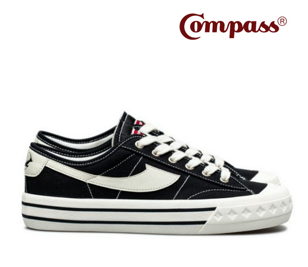
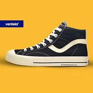
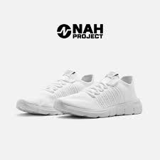

3 Brand Sepatu Lokal Favorit Gen-Z
Nah, Bagi kamu yang masih bingung brand sepatu lokal apa saja yang bisa jadi pilihan kamu, berikut adalah 3 brand favorit Gen-Z

COMPASS
Sepatu Compass merupakan brand sepatu yang berasal dari Bandung, bukan pemain baru di bidang persepatuan. Sepatu Compass didirikan pada tahun 1998 oleh bapak Kahar Gunawan.

VENTELA
Sepatu Ventela merupakan brand sepatu lokal yang memproduksi sepatu sneaker dengan harga yang relatif murah tetapi mempunyai build quality yang bagus. Brand yang berasal dari bandung ini mulai beroperasi pada tahun 2017, yang didirikan oleh sesorang pengusaha bernama Wiliam Ventela

NAH PROJECT
Salah satu brand sepatu asli Indonesia yang namanya sudah cukup dikenal, dan terbukti produk yang mereka tawarkan sudah dipakai oleh Presiden Republik Indonesia Joko Widodo adalah NAH Project. NAH Project terbentuk karena melihat adanya peluang pada industri sneakers dengan melihat naiknya tren sneakers di Indonesia. Saat ini, sneakers yang diproduksi NAH Project lebih ke arah daily-wear dengan siluet classic, casual, dan athleisure.
Info Selengkapnya klik disini!>